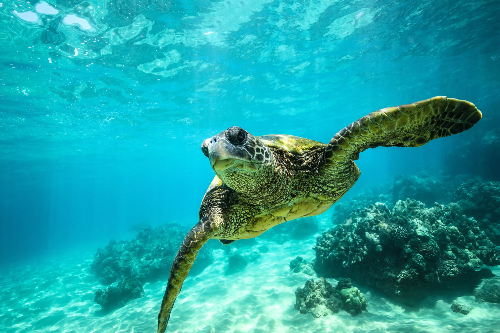

Sea Turtle Overview

Sea turtles are large, air-breathing reptiles that inhabit tropical and subtropical seas throughout the world. Their shells consist of an upper part (carapace) and a lower section (plastron). Hard scales (or scutes) cover all but the leatherback, and the number and arrangement of these scutes can be used to determine the species.
Sea turtles come in many different sizes, shapes and colors. The olive ridley is usually less than 100 pounds, while the leatherback typically ranges from 650 to 1,300 pounds! The upper shell, or carapace, of each sea turtle species ranges in length, color, shape and arrangement of scales.
Sea turtles do not have teeth, but their jaws have modified “beaks” suited to their particular diet. They do not have visible ears but have eardrums covered by skin. They hear best at low frequencies, and their sense of smell is excellent. Their vision underwater is good, but they are nearsighted out of water. Their streamlined bodies and large flippers make them remarkably adapted to life at sea. However, sea turtles maintain close ties to land.
Females must come ashore to lay their eggs in the sand; therefore, all sea turtles begin their lives as tiny hatchlings on land. Research on marine turtles has uncovered many facts about these ancient creatures. Most of this research has been focused on nesting females and hatchlings emerging from the nest, largely because they are the easiest to find and study.
Thousands of sea turtles around the world have been tagged to help collect information about their growth rates, reproductive cycles and migration routes. After decades of studying sea turtles, much has been learned. However, many mysteries still remain.
The following image illustrates the known region for green sea turtle populations:

Fun Facts
- There are 7 species of sea turtles.
- Leatherback sea turtles can travel more than 10,000 miles every year.
- When it’s time to lay their eggs, female sea turtles return to the same nesting grounds where they were born.
- During incubation, sex is determined by the temperature of the surrounding environment. Warm temperatures tend to produce more female hatchlings, whereas cooler temps result in males.
- Sea turtles have glands that help to empty excess salt from their eyes, making it appear as though they’re crying, but not to worry, they’re just doing some spring cleaning.
- Since they don’t have to return to land to lay eggs, males almost never leave the ocean. This can make it difficult to keep track of population numbers.
- It is estimated that only one hatchling in a thousand will make it to adulthood. Whether it’s the treacherous journey from nest to ocean or the predatory dangers of the open sea, it’s a cruel, cruel world out there for these youngsters.